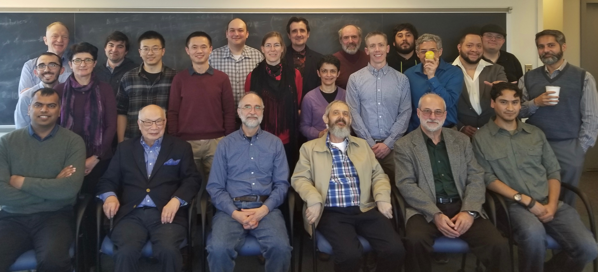

Forthcoming conference and seminar presentations
- WONAPDE
2019. Universidad de Concepción, Chile. January
21-25, 2019. (SD on HDG for transient elasticity.)
- ICIAM
2019. Valencia, Spain. July 15-19, 2019. (SD on HDG
for EM waves.)
Numerical Analysis & No Regrets

Numerical Analysis & No Negrets conference was held on February 16, 2019
at the Department of Mathematical Sciences at University of Delaware.
The conference hosted 23 scholars from various universities in USA and Canada.
There were 8 talks on different topics in numerical analysis, and a
warm casual dinner at the end of the day.
Recent conferences
- The
Fall 2018 Finite Element Circus. University of
Delaware. November 9-10, 2018. (HE on viscoelastic waves,
SD on HDG for elasticity)
- Symposium
of the International Association for Boundary Element
Methods (IABEM2018). Paris, France. June 2018. (FJS
on scattering by piecewise homogeneous materials)
- Frontiers in
Applied and Computational Mathematics (FACM) 2018.
New Jersey Institute of Technology. August 24-26, 2018.
(FJS on viscoelastic waves)
- BIRS
Workshop on Numerical Analysis of Coupled and
Multi-Physics Problems with Dynamic Interfaces.
Oaxaca, Mexico. July 29-August 3, 2018.
- The
Spring 2018 Finite Element Circus. University of
Tennessee. March 16-17, 2018. (SD on HDG)
- SciCADE
2017. The International Conference on Scientific
Computation and Differential Equations. Bath,
UK. September 11-15, 2017. (FJS on scattering by
thermoelastic materials)
- 30th
Chemnitz FEM Symposium. Strobl, Austria. September
25-27, 2017. (FJS on HDG)
- The Fall
2017 Finite Element Circus. UMBC. October 20-21,
2017. (TSB on control of waves on piezoelectric materials)
- SIAM
Conference on Analysis of Partial Differential Equations.
Baltimore, MD. December 9-12, 2017. (TSB on
viscoelastic waves)
- Joint
Mathematics Meetings. San Diego, CA. January
10-13, 2018. (TSB on control of waves on piezoelectric
materials)
- XXV CEDYA, XV CMA (Congress
of Differential Equations and Applications, Congress on
Applied Mathematics). Cartagena, Spain. June
26-20, 2017. (FJS on TDBIE)
- Recent
Advances and Challenges in Discontinuous Galerkin
Methods and Related Approaches. IMA Workshop,
Minneapolis. June 29 - July 1, 2017. (FJS on
DG)
- WAVES2017.
The 13th International Conference on Mathematical and
Numerical Aspects of Waves Propagation. Minneapolis,
May 15-19, 2017. (TSB on waves in piezoelectric media.)